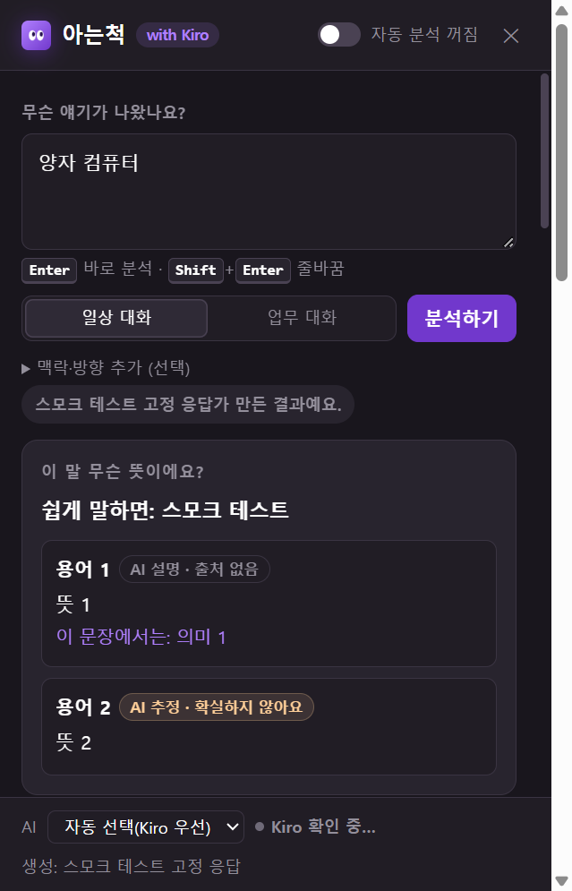

드래그 한 번으로 "뭐라고 말하지?"를 해결합니다
Kirothon 2026 · 팀 005 · 일상의 작은 불편 해소
회의, 수업, 일상 대화에서 누구나 매일 겪는 작은 불편입니다.

검색·정리·문장화를 한 번의 선택으로
출처 표시, "AI 추정" 구분, 지어내지 않음
선택 영역만 읽고 저장·자동 전송 없음
자동 감지가 안 되는 환경도 붙여넣기와 Ctrl+Alt+Space로 같은 흐름을 사용합니다.
| 단계 | Kiro로 한 일 |
|---|---|
| 명세 | PRD → requirements / design(정확성 속성) / tasks 작성, 형식 검증 |
| 스티어링 | 제품 지침(.kiro/steering)으로 개인정보·출처 규칙 고정 |
| 구현 | prd-to-repo 스킬로 Electron 앱, 테스트, 보안 점검 구현 |
| 제품 내부 | Kiro CLI 비대화형 모드를 AI 공급자로 연동 (KIRO_API_KEY) |
| 검증 | 단위·속성 테스트 57개, 스모크 실행, 보안 검토 문서 |
검증 완료
다음 단계